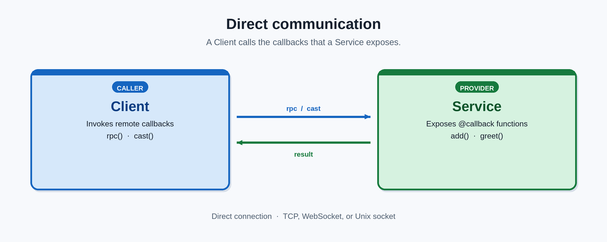
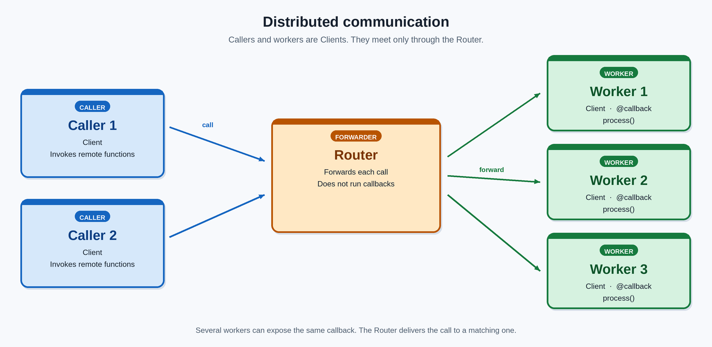

Architecture¶
Daffi supports two primary communication topologies: direct communication between a Client and a Service, and distributed communication through a Router.
Core components¶
| Component | Description |
|---|---|
Service |
Listens for incoming connections and exposes remotely callable @callback functions. |
Router |
Forwards messages between connected nodes. It does not execute callbacks itself. |
Client |
Connects to a Service or Router. It can issue remote calls, expose callbacks, or do both. |
Both Service and Client can expose @callback functions. The topology determines how those callbacks are reached.
| Topology | Who exposes @callback |
Who calls |
|---|---|---|
| Client → Service | The Service |
Clients (typically pure callers) |
| Client → Router → Worker | Any Client (workers, callers, or both) |
Any other connected Client |
In the Router topology a "worker" is simply a Client that has registered @callback functions — there is no separate worker class.
Direct communication¶
In a direct connection, a Client communicates with a Service.

- The Service exposes callbacks.
- The Client invokes those callbacks remotely.
- Multiple Clients can connect to the same Service simultaneously.
When to use: Simple request/response scenarios where one process owns the logic.
See Direct topology (Service).
Distributed communication¶
A Router enables multiple Clients to participate in a shared communication network.

- Workers expose callbacks through their Client connections.
- Callers invoke remote functions through the Router.
- The Router forwards calls to matching workers.
- Multiple workers can provide the same callback.
rpc()load-balances across matching workers (round-robin).cast()fans out to all matching workers.
A single Client can both expose callbacks and call remote ones over the same Router connection.
When to use: Worker pools, fan-out broadcasting, bidirectional peer communication, scalable deployments.
See Router and workers.